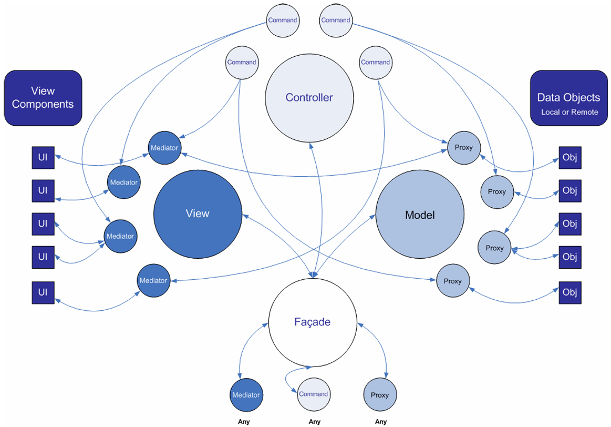

简述
从PureMVC这个名字上来看，我们就能知道：
以下是官方的一张图，个人认为是最好理解的一种方式了：

逻辑梳理
由图中我们可以发现，原本的MVC被各类设计模式所包装，即：
- Model使用了
代理模式 - View使用了
中介者模式 - Controller使用了
命令模式
最终使用
源码分析
最好的梳理方式还是看源码，可以看到一共就是4大板块---M/V/C/Facade
Facade
从
实际调用可能如下所示：
public class PureMVC_Main : MonoBehaviour
{
private void Start()
{
var hpFacade = Facade.GetInstance(() => new HPFacade()) as HPFacade;
hpFacade.Reset();
}
}
public class HPFacade : Facade
{
public HPFacade()
{
RegisterCommand("Reg_TakeDamageCommand", () => { return new TakeDamageCommand(); });
RegisterCommand("Reg_HealCommand", () => { return new HealCommand(); });
RegisterCommand("Reg_ResetCommand", () => { return new ResetCommand(); });
RegisterMediator(new HPMediator());
RegisterProxy(new HPDataProxy());
}
public void Reset()
{
SendNotification("Reg_ResetCommand");
}
}
这就是门面的核心：
从源码中我们知道其执行流程：
- 通过单例方法
GetInstance()创建IFacade实例- 构造函数本质上只干了一件事就是
InitializeFacade()，即InitializeModel()/InitializeController()/InitializeView()- 而这些Init方法又和Facade一样，通过
GetInstance()创建实例，仅此而已(同样会执行构造函数)Tip：Controller甚至又套了一层View
- 而这些Init方法又和Facade一样，通过
- 构造函数本质上只干了一件事就是
- 当然，之后还要进行上述我们创建的实际业务逻辑
public class Facade : IFacade
{
public Facade()
{
if (instance != null) throw new Exception(SingletonMsg);
instance = this;
InitializeFacade();
}
protected virtual void InitializeFacade()
{
InitializeModel();
InitializeController();
InitializeView();
}
protected virtual void InitializeModel()
{
model = Model.GetInstance(() => new Model());
}
protected virtual void InitializeController()
{
controller = Controller.GetInstance(() => new Controller());
}
protected virtual void InitializeView()
{
view = View.GetInstance(() => new View());
}
}
GetInstance()源码，可以发现工厂函数是在instance为null时使用的，所以这里就是一种充当创建与获取的方式
除此以外，源码中还提供了必须的功能函数，比如上述业务代码用到的RegisterXXX()
具体如下：
- Command
- RegisterCommand()
- RemoveCommand()
- HasCommand()
- Proxy
- RegisterProxy()
- RetrieveProxy()
- RemoveProxy()
- HasProxy()
- Mediator
- RegisterMediator()
- RetrieveMediator()
- RemoveMediator()
- HasMediator()
- 通知
- SendNotification()
- NotifyObservers()
可以看到就是非常清晰的4类函数：M/V/C基本操作/通知
Notifier
如果我们查看各个类的声明，会发现有很多类继承自Notifier，有：
- SimpleCommand/MacroCommand
- Mediator
- Proxy
public class Notifier : INotifier
{
public virtual void SendNotification(string notificationName, object body = null, string type = null)
{
Facade.SendNotification(notificationName, body, type);
}
protected IFacade Facade
{
get
{
return Patterns.Facade.Facade.GetInstance(() => new Facade.Facade());
}
}
}
通过以上代码可以得知：SendNotification()，便于我们在各处直接调用SendNotification()无需通过Facade.SendNotification()调用(即隐藏前缀)
Controller与Command
Controller 保存所有 Command 的映射。Command 类是无状态的，只在需要时才被创建
Command 可以获取 Proxy 对象并与之交互，发送 Notification，执行其他
的Command。经常用于复杂的或系统范围的操作，如应用程序的“启动”和
“关闭”。应用程序的业务逻辑应该在这里实现。
在传统MVC中，Controller是联系Model与View的桥梁，在PureMVC中肯定也是如此
Controller即
命令模式本身很简单，它就是一个Command，override一下Execute()即可
其类函数就是Facade收集的Command操作：
- ExecuteCommand()
Facade没有，即框架内部使用 - RegisterCommand()
- RemoveCommand()
- HasCommand()
核心是
public virtual void RegisterCommand(string notificationName, Func<ICommand> factory)
{
//所以说：观察者只能注册一次，而命令可以重新更换
//如果命令没有注册过，则让view注册一下观察者
if (commandMap.TryGetValue(notificationName, out _) == false)
{
view.RegisterObserver(notificationName, new Observer(ExecuteCommand, this));
}
//存储工厂函数
commandMap[notificationName] = factory;
}
public virtual void ExecuteCommand(INotification notification)
{
if (commandMap.TryGetValue(notification.Name, out var factory))
{
var commandInstance = factory();
commandInstance.Execute(notification);
}
}
可以看到注册其实是提供了一个工厂函数，更重要的是
Command是什么
public class SimpleCommand : Notifier, ICommand
{
public virtual void Execute(INotification notification)
{
}
}
public class MacroCommand : Notifier, ICommand
{
public MacroCommand()
{
subcommands = new List<Func<ICommand>>();
InitializeMacroCommand();
}
protected virtual void InitializeMacroCommand()
{
}
protected void AddSubCommand(Func<ICommand> factory)
{
subcommands.Add(factory);
}
public virtual void Execute(INotification notification)
{
while(subcommands.Count > 0)
{
var factory = subcommands[0];
var commandInstance = factory();
commandInstance.Execute(notification);
subcommands.RemoveAt(0);
}
}
public readonly IList<Func<ICommand>> subcommands;
}
通过以上代码可以得知：
Model与Proxy
Model 保存对 Proxy 对象的引用，Proxy 负责操作数据模型，与远程服务通信存取数据。
这样保证了Model层的可移植性。
Proxy即
同样是Facade收集的Proxy操作：
- RegisterProxy()
- RetrieveProxy()
- RemoveProxy()
- HasProxy()
核心是
public virtual void RegisterProxy(IProxy proxy)
{
//将参数proxy存入map中，并回调
proxyMap[proxy.ProxyName] = proxy;
proxy.OnRegister();
}
public virtual IProxy RetrieveProxy(string proxyName)
{
//取出名为proxyName的proxy
return proxyMap.TryGetValue(proxyName, out var proxy) ? proxy : null;
}
可以发现Model异常简单，可以说就是一个
所以我们可以认为：
Proxy是什么
public class Proxy: Notifier, IProxy
{
public const string NAME = "Proxy";
public Proxy(string proxyName, object data = null)
{
ProxyName = proxyName ?? NAME;
if (data != null) Data = data;
}
public string ProxyName { get; protected set; }
public object Data { get; set; }
}
通过以上代码可以得知：
View与Mediator
View 保存对 Mediator 对象的引用 。由 Mediator 对象来操作具体的视图组
件（View Component，例如 Flex 的 DataGrid 组件），包括：添加事件监
听器 ，发送或接收Notification ，直接改变视图组件的状态。
这样做实现了把视图和控制它的逻辑分离开来。
Mediator即
与M/C不同，V的话处理是Facade收集的Mediator操作，还具有Observer操作：
- RegisterObserver()
- NotifyObservers()
- RemoveObserver()
- RegisterMediator()
- RetrieveMediator()
- RemoveMediator()
- HasMediator()
那么先来看一下Mediator，核心当然是
public virtual void RegisterMediator(IMediator mediator)
{
//尝试存入mediator
if(mediatorMap.TryAdd(mediator.MediatorName, mediator))
{
var interests = mediator.ListNotificationInterests();
if (interests.Length > 0)
{
//创建观察者并订阅兴趣事件(注册)
IObserver observer = new Observer(mediator.HandleNotification, mediator);
foreach (var interest in interests)
{
RegisterObserver(interest, observer);
}
}
mediator.OnRegister();
}
}
public virtual IMediator RetrieveMediator(string mediatorName)
{
//取出名为mediatorName的mediator
return mediatorMap.TryGetValue(mediatorName, out var mediator) ? mediator : null;
}
可以发现：
Mediator是什么
public class Mediator : Notifier, IMediator
{
public virtual string[] ListNotificationInterests()
{
return new string[0];
}
public virtual void HandleNotification(INotification notification)
{
}
}
通过以上代码可以得知：ListNotificationInterests()与HandleNotification()
ListNotificationInterests()---返回值应该为一个string列表，即Command名HandleNotification()---是一个操作，即对于notification应该进行的操作
Observer与Notification
PureMVC 的通信并不采用 Flash 的 EventDispatcher/Event，因为PureMVC 可能运行在没有 Flash Event 和 EventDispatcher 类的环境中，它的通信是使用观察者模式以一种松耦合的方式来实现的。
你可以不用关心PureMVC的Observer/Notification 机制是怎么实现的，它已经在框架内部实现了。你只需要使用一个非常简单的方法从 Proxy, Mediator, Command 和 Facade 发送 Notification，甚至不需要创建一个Notification 实例。
根据Mediator部分源码的观察，会发现Mediator其实是个"壳子"，核心是其中注册的Observer
先来看一下其重要函数
public virtual void RegisterObserver(string notificationName, IObserver observer)
{
//添加兴趣事件
if (observerMap.TryGetValue(notificationName, out var observers))
{
observers.Add(observer);
}
//创建
else
{
observerMap.TryAdd(notificationName, new List<IObserver> { observer });
}
}
public virtual void NotifyObservers(INotification notification)
{
if (observerMap.TryGetValue(notification.Name, out var observersRef))
{
var observers = new List<IObserver>(observersRef);
//对每一个观察者通知
foreach (var observer in observers)
{
observer.NotifyObserver(notification);
}
}
}
可以看到observerMap可能和我们想的不太一样：key-string value-IList<IObserver>>
我们可能由于注册的方式(为Observer添加所有兴趣事件)误解为Observer名对应着其事件，
但事实恰恰相反，具体来说是：为通知绑定其观察者
仔细想的话是合理的：
Notification是什么
public class Notification: INotification
{
public Notification(string name, object body = null, string type = null)
{
Name = name;
Body = body;
Type = type;
}
}
// Facade
public virtual void SendNotification(string notificationName, object body = null, string type = null)
{
NotifyObservers(new Notification(notificationName, body, type));
}
通过以上代码可以得知：
Observer是什么
public class Observer: IObserver
{
public Observer(Action<INotification> notifyMethod, object notifyContext)
{
NotifyMethod = notifyMethod;
NotifyContext = notifyContext;
}
public virtual void NotifyObserver(INotification notification)
{
NotifyMethod(notification);
}
}
通过以上代码可以得知：NotifyObserver()触发
关系(View/Mediator/Observer/Notification)
通过View/Mediator/Observer/Notification的简单解读，我们能大致说出它们的关系：
- View主要是一个存储Mediator的地方(还有一个observerMap)，并提供Mediator与Observer相关的操作函数
- Mediator为"中转站"，创建Mediator本质上是创建Observer，主要通过
ListNotificationInterests与HandleNotification()建立了与Notification的联系 - Observer即观察者，会根据Notification通知到所有相关的Observer
- Notification即通知，仅仅是一个名字
整体流程
PureMVC的各个模块已经大致介绍完毕，我们已经基本了解了流程
那么在这里按流程看看具体的操作：
- 起始点必然是从Facade，也就是门面开始：
- Facade构造函数自身进行了初始化操作，即存储MVC单例
- 由于依赖关系的原因，
我们应该以Command/Proxy/Mediator的顺序进行注册
- 首先是Command注册：
- Command是附属于Controller的，其中commandMap会存储所有的ICommand
RegisterCommand() 为注册方法，核心为往commandMap存储了一组键值对 举例： RegisterCommand("Reg_TakeDamageCommand", () => { return new TakeDamageCommand(); });- 该函数中会通过View.RegisterObserver()创建通知对应的Observer
函数为：view.RegisterObserver(notificationName, new Observer(ExecuteCommand, this));
与Controller.RegisterCommand()类似，这里是通过observerMap进行存储 (注意：键值对是"通过通知名找已订阅观察者") - 首先需要创建Observer，构造函数传入了2个参数：
- 通知函数ExecuteCommand---执行的话流程为从commandMap获取ICommand工厂，创建ICommand实例，执行操作(Execute接口)
- 上下文，即自身Controller
- 首先需要创建Observer，构造函数传入了2个参数：
- 该函数中会通过View.RegisterObserver()创建通知对应的Observer
- 然后是Proxy注册：
- Proxy是附属于Model的，其中proxyMap会存储所有的IProxy
RegisterProxy() 为注册方法，本质上就是往proxyMap存储了一组键值对 举例： RegisterProxy(new HPDataProxy());
- 最后是Mediator注册：
- Mediator是附属于View的，其中mediatorMap会存储所有的IMediator
RegisterMediator() 为注册方法，核心为往mediatorMap存储了一组键值对 举例： RegisterMediator(new HPMediator());
存储后需要建立与Observer/Notification的联系：- 我们需要为Mediator重写ListNotificationInterests()以了解Mediator所感兴趣的通知
- 对于每一个Mediator，都会创建
另一种形式 的Observer：IObserver observer = new Observer(mediator.HandleNotification, mediator);
构造函数传入了2个参数：- 重写的处理函数HandleNotification()，需要根据通知的不同进行不同的视图刷新处理
- 上下文，即Mediator
- 对于每一个兴趣通知，都需要通过RegisterObserver()的方式与刚刚创建的Observer关联
上述内容是比较好理解的，关键点在于：2种Observer的创建方式/整体协作方式
通过一个
public class HPFacade : Facade
{
public HPFacade()
{
RegisterCommand("Reg_TakeDamageCommand", () => { return new TakeDamageCommand(); });
RegisterCommand("Reg_HealCommand", () => { return new HealCommand(); });
RegisterCommand("Reg_ResetCommand", () => { return new ResetCommand(); });
RegisterProxy(new HPDataProxy());
RegisterMediator(new HPMediator());
}
public void Reset()
{
SendNotification("Reg_ResetCommand");
}
}
- 注册
- 通过Command的注册，我们创建了一个Observer，调用即可执行Command
核心：Observer存储在View的observerMap中(通过通知名获取)，同时Command存储在Controller的commandMap中(延迟创建，后续通过工厂函数创建) - 通过Proxy的注册，我们会在proxyMap中存储该proxy，proxy派生类具有对应的执行函数，用于数据更新
- 通过Mediator的注册，我们又创建了一个Observer，调用即可执行mediator派生类所实现的函数(
HandleNotification())，用于视图更新
核心：Mediator是一个观察者，会将其与observerMap中的每一个兴趣事件建立联系(订阅)，而Mediator本身存储在mediatorMap中
- 通过Command的注册，我们创建了一个Observer，调用即可执行Command
- 刷新
刷新方式为
SendNotification()，我们的初始化刷新为：SendNotification("Reg_ResetCommand");
该函数本质上是引用的View.NotifyObservers()，即找到所有需要通知的observer，调用对应的执行函数，这里就是ResetCommand，数据更新后又通过SendNotification()进行视图刷新
//重置函数 public void Reset() { SendNotification("Reg_ResetCommand"); } //触发的Command public override void Execute(INotification notification) { HPDataProxy dataProxy = Facade.RetrieveProxy(HPDataProxy.NAME) as HPDataProxy; dataProxy.ResetHP(); } public void ResetHP() { //先Max再Cur，否则因Clamp导致Cur赋值失败 _hpData.MaxHP = 100; _hpData.CurrentHP = 100; SendNotification("Msg_Refresh", _hpData); } //触发的视图刷新 public override void HandleNotification(INotification notification) { switch (notification.Name) { case "Msg_TakeDamage": case "Msg_Heal": case "Msg_Refresh": HPData hpData = notification.Body as HPData; _hpText.text = $"HP:{hpData.CurrentHP}/{hpData.MaxHP}"; break; } }那么对于2个按钮来说也是同理，本质上就是：
发送通知执行Command刷新数据，再发送通知执行视图刷新
至此，脉络已经非常清晰了，核心点就是
文档分析
在PureMVC的官网中，给出了一个文档，那么可以通过文档详细地了解一下
PureMVC结构
在前面的分析中，我们每一组模块的引用都是来自于此，这我们其实已经了解：
- Model/Proxy
- View/Mediator
- Controller/Command
- Facade/Core
- Observer/Notification
除此以外，还有几条Tips：
Notification可以被用来触发Command的执行 发出时，对应的Command（命令）就会自动地由Controller执行。Command实现复杂的交互，降低View和Model之间的耦合性。
根据我们的分析的确如此：
SendNotification()中有一种就是来自于存储ICommand的Observer，通过Notification即可触发
其中，Command是一个独立的脚本，并没有放在Model中，自然降低了VM之间的耦合Mediator发送、声明、接收Notification 当用View 注册 Mediator 时，Mediator 的 listNotifications 方法会被调用，以数组形式返回该Mediator对象所关心的所有Notification。
之后，当系统其它角色发出同名的 Notification（通知）时，关心这个通知的Mediator 都会调用handleNotification 方法并将 Notification 以参数传递到方法。Mediator即中介者，自然需要承担中介的职责，也就是：
- 声明Notification(注册Mediator时需要通过
ListNotificationInterests()确定Mediator关心的Notification) - 发送Notfication(中介者需要
SendNotification()以执行Command以执行HandleNotification) - 接收Notification(执行
NotifyObserver()时会有Command与HandleNotification两种情况，其中HandleNotification就属于Mediator)
更简单来说就是上述引用所描述的那样
- 声明Notification(注册Mediator时需要通过
Proxy发送，但不接受Notification 在很多场合下Proxy需要发送Notification（通知），比如：Proxy从远程服务接收到数据时，发送 Notification 告诉系统；或当 Proxy 的数据被更新时，发送Notification 告诉系统。
如果让 Proxy 也侦听 Notification（通知）会导致它和 View（视图）层、Controller（控制）层 的耦合度太高。
View 和Controller 必须监听 Proxy 发送的Notification，因为它们的职责是通过可视化的界面使 用户能与Proxy持有的数据交互。
不过对View层和Controller层的改变不应该影响到Model层。
例如，一个后台管理程序和一个面向用户程序可能共用一个Model类。如果只是用例不同，那么 View/Controller 通过传递不同的参数就可以共用相同的Model 类。这句话其实通过我们的流程就可以知道了：
SendNotification()触发Command，Command中的函数是由Proxy提供的，然后再通过Command中的SendNotification()触发视图更新
可以发现2种通知的区别：- Command是被封装成一个一个的，其实此时已经拆解，Proxy中一个函数会对应一个Command(通知)
- 视图更新是集合形态的，一个Observer(Mediator)对应多个通知，需要有一种方式知道Mediator关心哪些通知，也就是
ListNotificationInterests()
所以
不接受，本质上其实是不需要，Command已经通过注册的方式完成了
Facade
Facade在我们看来是非常容易理解的一个模块，但同样非常重要：
Facade是Model/View/Controller三者的"经纪人"
事实确实如此，Facade的存在非常好地协调了三者，而且把繁琐的执行操作隐藏起来，我们仅需关注MVC的子部分(Proxy/Mediator/Command)的关键内容即可
一般地，实际的应用程序都有一个 Façade 子类，这个 Façade 类对象负责初始化Controller（控制器），建立Command与Notification名之间的映射，并执行一个Command注册所有的Model和View。
这里提出了一个建议：
这是一个非常好的建议，这
所以我们需要改造一下：
使用MacroCommand创建一个StartupCommand即可：
public class StartupCommand : MacroCommand
{
protected override void InitializeMacroCommand()
{
AddSubCommand(() => new ModelPrepCommand());
AddSubCommand(() => new ViewPrepCommand());
AddSubCommand(() => new ResetHPCommand());
}
}
其它
Notification
通知是一种观察者模式，可以使各层
文档中提到：
Notification（通知）机制并不仅仅是 Event（事件）机制的替代品，它们的工作方式有本质上的不同。但这两者相互协作可以提高视图组件的可重用性 ，甚至，如果设计得当，视图组件可以和PureMVC“脱耦”。
这里提到的Event是AS语言中的机制，在PureMVC中使用Notification机制实现
各个类的配合是一种
- Facade 和 Proxy 只能发送Notification
- Mediators 既可以发送也可以接收Notification
- Notification 被映射到 Command，同时Command也可以发送Notification
SendNotification()，有时我们会传入额外参数如：SendNotification(HPMediator.TAKE_DAMAGE, _hpData)
具体来说有：public virtual void SendNotification(string notificationName, object body = null, string type = null)
显然：
body---主体，即"类型"参数，用于唯一标识对象 type(不常用)---类型，大概率是string，用于区分不同情况(如：TAKE_DAMAGE情况可以有"Normal"/"Critical"不同情况)
Command
文档中提到一点：
Command 对象是无状态的；只有在需要的时候（Controller 收到相应的Notification）才会被创建，并且在被执行（调用 execute 方法）之后就会被删除。所以不要在那些生命周期长的对象（long-living object）里引用Command对象。
public virtual void RegisterCommand(string notificationName, Func<ICommand> factory)
{
if (commandMap.TryGetValue(notificationName, out _) == false)
{
view.RegisterObserver(notificationName, new Observer(ExecuteCommand, this));
}
commandMap[notificationName] = factory;
}
public virtual void ExecuteCommand(INotification notification)
{
if (commandMap.TryGetValue(notification.Name, out var factory))
{
var commandInstance = factory();
commandInstance.Execute(notification);
}
}
可以看到确实如此：注册时传入的是工厂，执行时才会创建出来，而且由于没有引用，自然会消失
但是：
Command所需要做的是：
- 注册、删除 Mediator、Proxy 和 Command，或者检查它们是否已经注册
- 发送Notification通知Command或Mediator做出响应
- 获取Proxy和Mediator对象并直接操作它们
这是当然的，Mediator和Proxy不该暴露自身，而是提供函数用于隐藏细节
除此以外还有一点：
比较特殊的是Application的Mediator，它是唯一的被允许知道Application 一切的类，所以我们会在Application Mediator的构造函数中创建其他的Mediator对象。
这其实也意味着：
public class MainMediator : Mediator
{
public new const string NAME = "MainMediator";
public MainMediator(GameObject view) : base(NAME, view)
{
InitHPView();
}
private void InitHPView()
{
//通过Main找到下一层级的view
GameObject hpPnlGO = ((GameObject)ViewComponent).transform.Find("HPPnl").gameObject;
Facade.RegisterMediator(new HPMediator(hpPnlGO));
}
}
public class HPMediator : Mediator
{
public new const string NAME = "HPMediator";
public HPMediator(GameObject view) : base(NAME, view)
{
//...
}
public override string[] ListNotificationInterests(){/*...*/}
public override void HandleNotification(INotification notification){/*...*/}
}
Mediator
Mediator的事件响应处理方式如下：
- 检查事件类型或事件的自定义内容
- 检查或修改View Component的属性（或调用提供的方法）
- 检查或修改Proxy对象公布的属性（或调用提供的方法）
- 发送一个或多个Notification，通知别的 Mediator 或Command作出响应（甚至有可能发送给自身）
一些经验：
- 如果有多个的 Mediator 对同一个事件做出响应，那么应该发送一个Notification，然后相关的Mediator做出各自的响应
- 如果一个 Mediator 需要和其他的 Mediator 进行大量的交互，那么一个好方法是利用 Command 把交互步骤定义在一个地方
- 不应该让一个 Mediator 直接去获取调用其他的 Mediator，在Mediator 中定义这样的操作本身就是错误的
- Proxy 是有状态的，当状态发生变化时发送 Notification 通知Mediator，将数据的变化反映到视图
文档提到：
还要注意的是，Mediator的职责应该要细分。如果处理的Notification很多，则意味着Mediator需要被拆分，在拆分后的子模块的Mediator里处理要比全部放在一起更好
个人认为具体情况具体分析，确实职责不同就拆分
文档还提到：
虽然Mediator 可以任意访问 Proxy，通过 Proxy的 API读取、操作 Data Object，但是，由Command来做这些工作可以实现View和Model之间的松耦合。
如果一个 Mediator 要和其他 Mediator 通信，那它应该发送 Notification 来实现，
而不是直接引用这个Mediator来操作。
Mediator 对外不应该公布操作View Component的函数。而是自己接收Notification 做出响应来实现。
以上是一些解耦的操作
Proxy
文档提到了
- Remote Proxy, 当 Proxy管理的数据存放在远程终端，通过某种服务访问
- Proxy and Delegate, 多个 Proxy 共享对一个服务的访问，由 Delegate 封装对服务的控制访问，确保响应正确的返回给相应的请求者
- Protection Proxy, 用于数据对象的访问有不同的权限时
- Virtual Proxy, 对创建开销很大的数据对象进行管理
- Smart Proxy, 首次访问时载入数据对象到内存，并计算它被引用的次数，允许锁定确保其他对象不能修改
如有需求可以进行扩展
文档还提到了Proxy与其它模块的联系：
Proxy 不监听 Notification，也永远不会被通知，因为 Proxy 并不关心 View的状态。但是，Proxy提供方法和属性让其它角色更新数据。
Proxy应该采取的方式是发送Notification（这些Notification可能被Command或Mediator 响应）。Proxy 不关心这些 Notification 被发出后会影响到系统的什么。
把Model 层和系统操作隔离开来，这样当View 层和 Controller 层被重构时就不会影响到Model层。但反过来就不是这样了：Model层的改变很难不影响到View层和Controller层。毕竟，它们存在的目的就是让用户与Model层交互的。